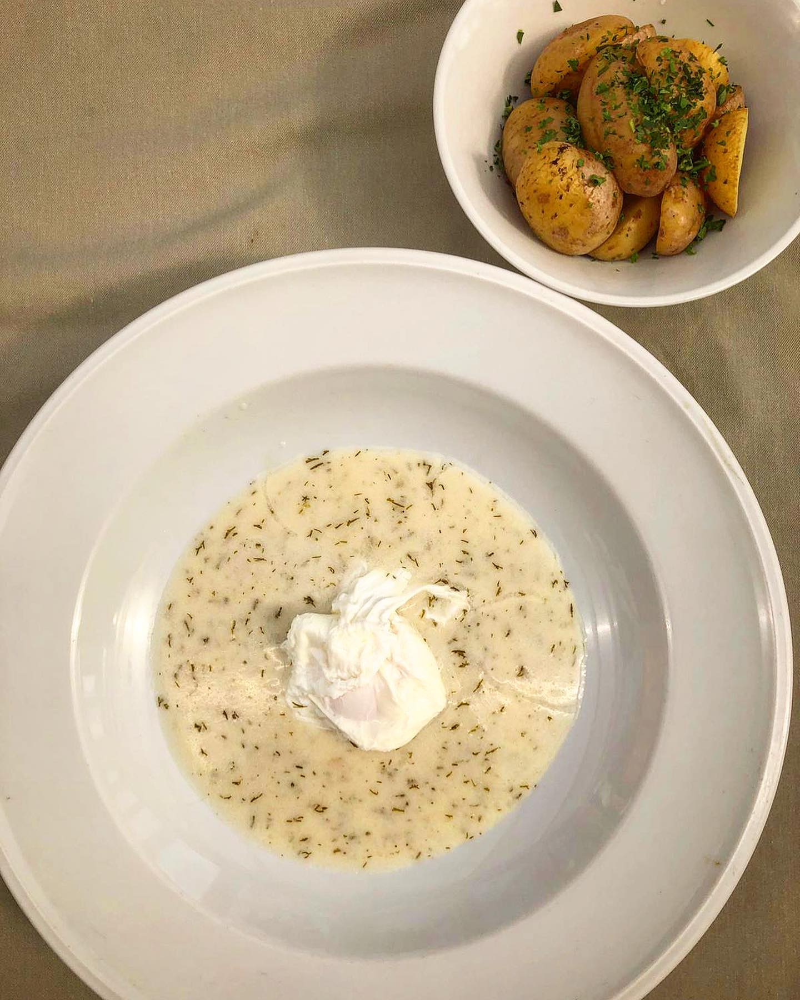

Kôprová omáčka podľa @restaurace_na_vrskach — Normy Jedál
Koprovka🌱 ano či ne? A pokud ano, upřednostňujete brambor, nebo knedlík? Nikde jinde na světě se s podobným typem jídla nesetkáme, je to klasická česká pochoutka. Pamatuji si, jak jsme ve školní jídelně odmítali jíst omáčku a brambor. Ale co jsme se začali v jídle trošku babrat a zjistili jsme, že koprovka nemusí být vůbec nudná bílá omáčka s vejcem na tvrdo a rozvařeným bramborem, co takhle zkusit naši poctivou hustou koprovou omáčku se ztraceným vejcem a brambory grenaille? Budeme se těšit na Vaše reakce😊. #dobrouchut#restauracenavrskach#roztoky#roztokyuprahy#koprovka#czechfood#czechcuisine#koprovaomacka#egg#poachedegg#dill#dillifoodies#dillsauce#tasty#food#foodinsta#foodinspiration#corona#coronatime#restaurant#supportrestaurants#letseat#dnesjem#objevprahu